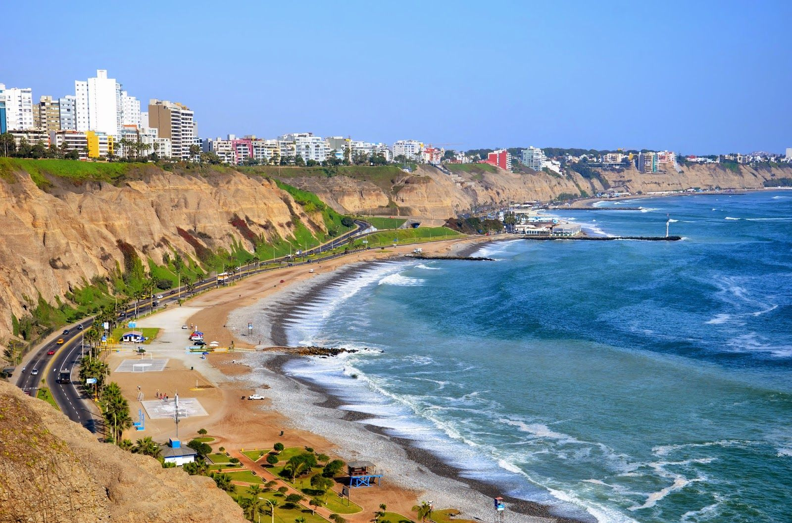

Presenta un clima semicálido muy árido, salvo en el extremo norte que es de clima tropical seco. A pesar de la desertificación hay alta humedad atmosférica, lo que produce una ligera sensación de frío, aunque la temperatura raramente baja a 12 °C. Durante el verano, en cambio, el sol brilla con fuerza y la temperatura alcanza con frecuencia los 30 °C. Las regiones centrales y sur de la costa peruana poseen dos estaciones bien marcadas: una invernal, entre abril y octubre; y una estival, entre diciembre y abril. La región norteña de la costa, por su parte, no sufre el efecto de las aguas frías, lo que se traduce en casi 300 días de sol y temperaturas cálidas a lo largo del año (hasta 35 °C en el verano) . El período de lluvias se produce entre noviembre y marzo.
